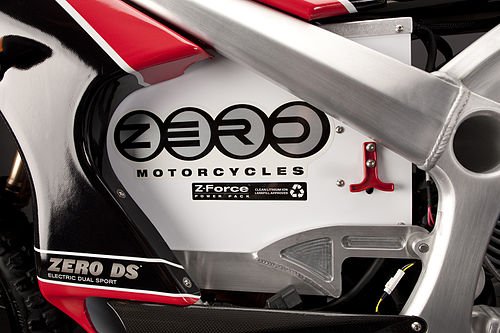
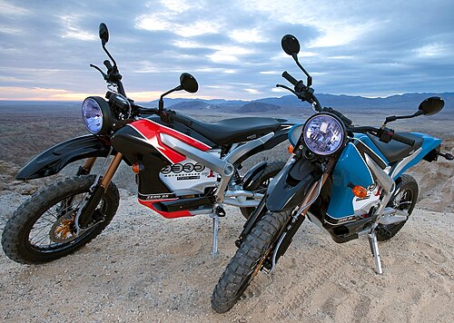
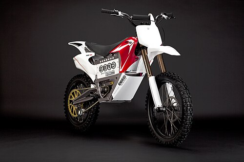
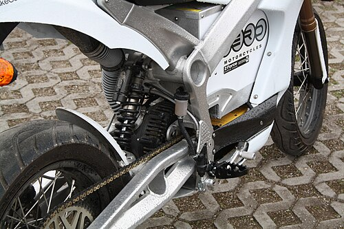
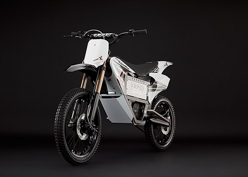

Zero Motorcycles
Zero Motorcycles Inc. is an American manufacturer of electric motorcycles. Formerly called Electricross, it was founded in 2006 by Neal Saiki, a former NASA engineer, in Santa Cruz, California. The company is now located nearby in Scotts Valley.
Zero electric motorcycle models include the Zero S (street), SR (street racing), FXS (supermoto), DS (dual-sport), DSR (dual-sport racing), FX (motocross), and SR/F.
Model history
The Zero S began shipping in volume in 2010, the first model year to include the Agni Motor, at which time the DS, a dual-sport model based on the S chassis became available. The XU, a smaller street bike with a removable battery, based on the same chassis as the Zero dirtbikes was produced from 2011 to 2013.
In 2012, Zero introduced the ZF9 Power Pack with the Zero S & DS models making them the first production electric motorcycles that can exceed an EPA-estimated 100 miles on a single charge.
In 2013 the Zero S and DS were completely redesigned. The battery capacity was increased to 11.4kWh, and a new brushless permanent magnet AC motor was introduced. In 2013 the Zero FX dual-sport model with modular removable power packs was introduced. CHAdeMO fast charging was also available on 2013 models.
In 2014 the optional 2.8kWh "Power Tank" became available. 2014 also saw the addition of the Zero SR to the range, a higher performance version of the Zero S, incorporating more powerful controller electrics and a motor with higher temperature magnets.
The 2015 models had battery pack size increased to 12.5kWh, for a total possible maximum capacity of 15.3kWh including the optional Power Tank. Also introduced in 2015 were standard ABS brakes and Showa suspension. CHAdeMO fast charging was eliminated as an option, leaving instead an optional quick charger accessory at added cost.
In 2016, Zero announced the DSR and FXS models. The DSR is based on the DS, but with the more powerful motor from the SR. The FXS is a supermoto version of the FX. Additional changes for the model year include the availability of a "Charge Tank" accessory, which is an on-board Level 2 charging system compatible with the J1772 plug. Battery pack size improved again to 13.0kWh (3.3kWh per FX power pack), for a total possible maximum capacity of 15.9kWh including the optional Power Tank. The air-cooled motors on the SR, DSR, and FXS were revised to reduce heat produced during high output.
For 2017, all models have the interior-permanent-magnet (IPM) motor. All models also received a larger capacity controller which provides an increase in maximum torque and horsepower output, up to 116 lbs/ft on the SR and DSR models. All models but the S ZF13.0 (Already Installed) receive a wider, high-torque carbon fiber reinforced belt. Other changes for 2017 include a locking tank box and more durable paint on S/DS/SR/DSR models, and the ability for owners to update their bike's firmware through the mobile app.
For 2018 Zero introduced the ZF14.4 battery, available for the S and D models (alongside the ZF7.2 battery) and the SR and DSR models (where it is the only available option). Until the introduction of the 2020 SR/F, traction control was absent across the lineup.
For 2020, new trellis-framed motorcycles were introduced, the SR/f and the faired SR/s, with higher performance, as well as 6 kW and 12 kW onboard charging options.
Zero Motorcycles also produces a line of electric motorcycles for police, authority, and military use. The fleet motorcycles are based upon the company's standard models but outfitted with equipment such as police lights, sirens, crash bars, and storage accessories.
In 2016, the company celebrated its 10th anniversary.
In 2023, ZERO Motorcycles entered into the Australian market distributed through Peter Stevens Motorcycles, but in September 2025 failed to break into the EV market and liquidated its assets and auctions their assets through Pickles Auctions.
Gallery




